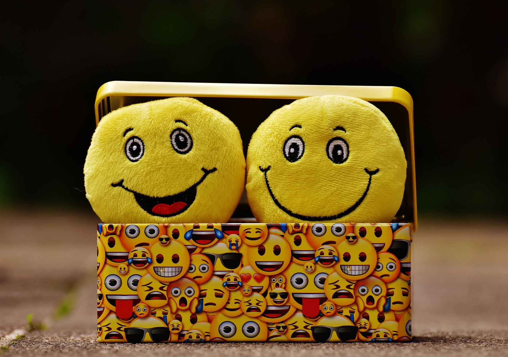

Relax ! How does your mind Relax? How to Remove Your Stress? For Happiness.
Be Relax By Express and Share Your Feelings for Removing Stress.

Life is is very mysterious subject. Everyday many people live in the earth with various types of stress . Because, everyday they struggle in the earth for leading better life. Moreover, as a result, At one time , the feel suffer more and more stress. As a result, at one point they lose interest in life. Some commit suicide, and many become addicted to various neurotransmitter drugs that are harmful to the body. Threatening themselves, family and society. So everyone is trying to find a way to live with a peaceful. And relax body and mind free from various pressures.
So , Now The Discussion Point is How to Keep Relax and Free From Stress and Lead Happiness Life?
First of all share your feelings. Be relax be express and share your feelings . In addition , it is absolutely verifiable that, when we express and share our emotion to other . It helps us to remove our emotional and physical stress and also keep relax our mind.
For example:Share Your Feelings With Reliable Friends
When you share your feelings with your faithful friends. It helps you to get inspiration and better cooperation. Moreover, you can enjoy your discussion with your intimate friends. Besides, it is true that, bosom friends always give best advice , so that you can boost your mental energy. And lead healthy life for long time. So, it is sure that share your feelings with close friends is one of the best way to remove stress and keeping in relax with physically and mentally.
With Your Family Members
Family is your first refuge. Hence, we everybody should give importance to our family member in feelings share. In addition, if we share our problem, initially with our family reliable member. Then it will bring more benefit for us. Likewise, it is obviously verifiable that, our family is not only our first shelter, but also place of safety and dependency. For this reasons, share your feelings with family memeber. For instance: your father, mother and other. Because, it is certainly that every parents love their child. It helps to get better inspiration, courage and save from many unwanted situation.
Reading Books , Listening to Music or Engaging in Creative Work and Cultural Activities
If we actively engage ourselves in creative or cultural work. It helps to relieve stress. Such as going to a public library , reading a favorite book with everyone. Moreover, listening to music with friends, or sharing joy with everyone by participating in a drama show. We can easily blow way the stress that is on our minds. We must believe that, nature as human being is a social creature. And that is way we depend on each other. And we can never be better alone. We will better off by living socially.
In addition, if we immerse ourselves in our daily activities with the feeling of happiness. Then we will be free from the worries, frustrations, excessive stress. Furthermore, so each of us should do all the work . Including professional responsibilities with joy and good home to keep ourselves free from stress. Finding joy in the middle of work. Love the work without feeling the burden. Taking work as an addiction. Not a profession is beneficial in all respects. As a result, we will be free from a lot of stress.
Visit The Fascinating Heart Wrenching Nature
Traveling is the best way for gaining practical knowledge about the place and environment. In this case there is no alternative. In addition, it is absolutely accurate that, many people everyday travel in different place only for their professional work. On the contrary, When you take a trip in excursive place for mental recreation. For instance: sea beach, river bank, awesome forest, shower. Then it keep you in relax, removing mental stress and boost energy in your body and mind. As a result, at the end of the tour. It seems as if such a colorful time could have been spent for a few more days . You feel more like. It is not just travel, it is the nectar of being good in body and mind.
Because, it is accurate that, wonderful nature is good for removing stress and marvelous relax. Nature is the best friend of human being. Without creation human existence in the earth is unimaginable. Moreover, all kinds of necessity element of man get from the environment. Such as: water, light, air, food and all things. Likewise, natural environment always determine human existence in the earth. And it is true that natural environment make calm and heavenly environment when it is at a good stage. Therefore, it creates strong protective power in human mind and eliminate all kinds of pressure. Besides, all category of diseases medicines element come from natural resources. In conclusion, we can say easily that no nature, no existence of human.
Yoga, Exercise and Meditation and Taking Organic or Natural Food is The Best way For Physical and Mental Fitness
It is universally true that yoga , exercise and meditation . Taking natural or organic food and maintain diet habit. According to on that formula is the best way for physical and mental fitness and removing all types of stress.
From time immemorial. In countries considered to be the pilgrimage sites of various important civilizations. Regular yoga exercises, physical exercises , meditation and accordingly regular eating habits were emphasized to keep oneself well physically and mentally. For example: in ancient Indian civilization. And even in the Chinese civilization of the Confucian era. It was given on strict adherence. As a result, all the civilized people of that time. Who followed all these rules and regulations of good health and longevity were much less prone to diseases. And as a result they were able to live a long and healthy life.
In addition, yoga and meditation is the most important for keeping mind relax and removing stress.
Organic or Natural Food
Furthermore, diet is an integral part of a person’s physical and mental well-being and long life. There are some foods that have a negative effect on human nerves. Such as alcohol.
But those who want to keep themselves warm by drinking alcohol. If they do not drink alcohol. But drink naturally made honey. It will keep their body warm and will help them to live a long life by increasing their immunity. In addition, those who eat fast food to quench their thirst. But if they do not eat fast food . They eat cheese, milk, eggs with bread made of flour. Just as it will quench their thirst. It will also relieve them of their weakness and give them strength in their bodies. On the other hand, fast food increases body fat and execess weight. At one time, the body becomes weak and suffers from various diseases. Besides, many people drink artificial drinks made of various chemical ingredients to quench their thirst in the scorching heat or to quench the body’s fatigue. Which in many cases causes long-term negative reactions on various organs of the body. But if we drink naturally occurring fruit juice to quench the fatigue or thirst of our body. For example: coconut water, lemon water, mango juice or various other fruit juice
So it is certain that the habit of eating natural or oganic food for a long healthy life along with regular exercise and meditation helps us to keep physically and mentally healthy, relaxed and free from various kinds of stress.
Express Gratitude Feeling to Great Creator
At present world mental stress is the main problem of human being. Specifically who are doing job or business in different organization in different position. They feel it very highly. Moreover, In that case it creates different types of disturbance in human society. In addition, It influence our social and family life in various way . So, Now The Effective Way to Solve The Problem is We have to be more creative so that we can avoid all types of mental tension. On the contrary, spiritually if we practice some rules and work. Then we can get easily relief from everyday different type of mental pressure and physical pain. For example: regular physical exercise meditation , Yoga and express deeply grateful feelings to our Great creator Allah/ Creator. Furthermore, if we believe in our religion. Then we have to believe that we and earth and whole universe are created by Great creator / Allah. So , feel thankful from the bottom of your heart to the great Creator of all blessing that you Creator loved you. And that you still have so many good things that many do not have. Likewise, If we always be grateful to our Great creator / Allah for his all gifted things. Which we have got from his through the universe. For this reason we can lead happy life in the earth.
Secondly, we have to be kind, be generous. And be tolerant of others. Likewise, a humble heart to those who support us in various ways. As well as we have to extend a helping hand to them in every moment of life. Besides, who are religious they have to believe that when the servant expresses gratitude to the Creator after enjoying the blessing given by the Creator. Then the Creator is very happy with such a servant. In the same way, if another person expresses gratitude to one person for the benefit of another. Then not only the person is happy, but also the Creator. And the grateful person are satisfied.
So , feel thankful from the bottom of your heart to the great Creator of all blessing that you Creator loved you. And that you still have so many good things that many do not have. Likewise, If we always be grateful to our Great creator / Allah for his all gifted things. Which we have got from his through the universe. For this reason we can lead happy life in the earth.
What is Feeling?
Feeling is a such a process of action of the mind which is influence us physically and mentally. But it is expressed through the emotion and various types of behavior reaction in different time dissimilar environment of mind stage To more illustrate: In addition, it is sure that we can distinguish our different types of emotional and behavioral activities in various kinds of environment only through feelings. So that we can understand what is painful and enjoyment matter for us. Which things should avoid and accept us . Besides, such as: when we take food and drink water we can recognize the taste of food and water. And then we can determine which food is delicious and bitter for us. Moreover, when someone physically attack us at that time we can understand that we have to protect it. Because our mind send us reaction that we must save us from the hit. Furthermore, while we lose our favorite things and person then we realize torment in our mind. This mind reply is called feeling. Likewise, in that case it is easy to say that after reaction of every action in any act mentally and physically is called feeling.
And, Now The Question is That How to Understand Feelings?
This answer, in one sentence, we can realize it through the five senses in our body.
This five organ of human body is touchable and it is called source of feelings and knowledge. On the other hand there are one more sense is called sixth sense of human life. It is untouchable but believe it on the basis of mind power. Such as: imagination power, Capability of forecasts about future , communication with other through the subconscious mind that is known as telepathic.
Classification of Feelings on The Basis of Five Senses
1. Feeling of Sight
Utilization of eyes is only for watching scenery of environment, incident and any things. When we watch a place, incident and accident or other things at that time we can realize about the things. For example: if we see any accidental death it creates pathetic response in our body. Then, it follows that we go ahead to help the affected people. In contrary, while we see rainbow, or beautiful drama, beautiful opposition gender, awesome nature, highly romantic scenery etc. Then, it creates in our mind lovable feedback . This response or feedback is made through watching the environment through the eyes. Furthermore, for this reasons it is called feeling of sight.
2. Affection of Hearing
Ears are used for hearing sound of object and voice of man. It helps us to gain knowledge about the object and man. For instance: when we hear sound of a bomb explosion at once it make negative answer about the environment in our mind. Then , as a result we take more careful step about the place and try to stay in safe mode . Alternatively, when hear a interesting voice song at that time it creates enjoyment rejoinder in our mind. Likewise, thereby we take more attentiveness to enjoy the song properly.
3. Feeling of Taste
We use tongue only for taking taste of food and water. One example is that after eating palatable food it build desire to more food in our mind. However, when get bitter taste in any food or water then it creates negative response in our mental to give up the food or water. And then, in that case it is obviously truth that in here the mind reflection about the food. Just as: “desire to more food” about delicious food. Next is that, “to give up the food ” about the bitter taste food. So, now we can say both reflection of our mind about food is called feeling of taste. Moreover, it is certainly truth that as a human being we everybody like to stay with better things, no bad.
4.The Sense of Smell
Taking smell of food, object and breathing in the air through the nose. To illustrate :
When we take smell of food or object at that time we perceive condition about food, object and air. In addition, it is obviously true that if smell is healthy for us then we wish try to take more . Furthermore, now we can realize that in this sentence the word “wish” it means feeling and we know that feeling is a process of action of our mind. Besides, it is certainly true that in this sentence the word ” wish” is used in positive sense of the action. In contrast, whenever the smell of object or air is filthy at that moment it creates negative impression in our mind so that we want to try as far as quickly to leave the place as if we can feel more better and keep well physically and mentally. In here the word of “want to leave” means that feeling. Although, these words are utilized in this sentence in negative sense of feeling. Moreover, in conclusion it is sure that positive and negative both smell reactions are part of feeling.
5. Feeling of Touch
Whichever we touch any things in the earth we have to do it through our skin. Moreover, we everybody known universally that our whole body is covered and protected by corium. Similarly, for this reasons we can not imagine without dermis our existence. Besides, in that case, whenever we hold any object for example: man, food, book etc in the earth at once we can understand position of the object. For instance : when our any organ comes in touch of fire at once we get negative reply from our mind so that we move from fire. In addition, in this sentence the word of “reply” means feeling that is process of action of the mind. Alternatively, if we touch our lover or desirable person at that moment we can grasp that like to touch the person more long time. Furthermore, in this sentence the word grasp means feeling and it is used here as a positive response of the mind.
Expression of Feelings
For example:
It is universally truth that expression of feelings is the most potential matter for all. Moreover, it is obviously sure that we can realize about other person motive through only expression of feelings.
But, now question is that in which part of our body keep most important role in the expression of feelings?
In one sentence the query answer is that mouth area . Because in our life every happiness incident or accident our every expression is expressed initially through our face. Due to which everyone says that face is the mirror of the heart. For instance: when someone is in trouble , his face becomes pale. Smile is the inevitable part of facial expressions of feelings. For example: when a man gets his desired promotion, a smile appears on his face. Again, when someone makes fun of someone, they express it through laughter. In addition, another important matter is that, in most time, sweet smile is one of the best tool for making better relation with clients and other.
Unnecessary laughter, on the other hand, destroys a person’s personality. So, we have to express laughter according to our environment and situation, and if we accept this issue in a good way, we will accept it with respect and dignity. Otherwise, it will not be good for us. Furthermore, it is accurate that depending on the expresion of feelings, a person’s personality determined by others. Likewise, it is sure that, personality is the most important factor for a man to getting proper respect to other. Because attractive personality always to attract others, as a result it exposed a person importance and honor to others. And then, it is possible only through expression of feelings to maintain properly social values, environment and situation.
Be Forthright, Do Not be Afraid

We everybody believe that mind is very powerful weapon and source of prudence , imagination and also wise. It is true that if your forthright then you will face different problems it makes many enemy. They will want to stop you . In contrast, I , We and You do not be fear on face any enemy and problem .
More over, it is obviously accurate that, life in the earth for the forthright person, Who are cowards the lose a lot of great opportunity benefits. As a result they often fall behind in the battle of life. Because, we must remember that time and opportunity do not always catch up to us . So, every one of us should make good use of time and seize the opportunity with courage.
Then we can get easily relief from everyday different type of mental pressure and physical pain. For example: regular physical exercise meditation , Yoga and express deeply grateful feelings to our Great creator Allah/ Creator.
Furthermore, if we believe in our religion. Then we have to believe that we and earth and whole universe are created by Great creator / Allah.
Moreover, theoretical is not less importance matter. Some importance sector it is very potential issue. One example : academic sector.